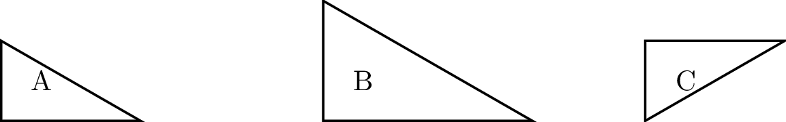

Fully structural Logical Operators
One of the giants of 20th century logic, Alfred Tarski, gave an account of “What are Logical Notions?” His answer considered how these ideas evolved in history which lead him to a brilliant start of an answer.
Tarski’s Thesis: When you reason about a world you limit the topic by rules, called abstraction. Once in your abstract world, your logical notions are those things that are no longer perceived to change.
Tarski used an example of his predecessor Klein. Imagine you are in high-school geometry, Euclid’s world, what might you say about the three triangles?

You might recall that triangles A and C are called congruent because they have the same angles and edge lengths. Euclid considered them the same. In fact much of Euclidean geometry is about making congruent copies of shapes with a ruler and compass. But of course there are differences. \(A\) is on the left, \(C\) is on the right. \(A\)’s right-angle is up, \(C\)’s right angle points down. Those differences are ones that abstraction to Euclid’s world simply ignores. Euclid’s abstraction is thus invariant (unchanging) to translation, rotations, and flips. All aspects of a diagram that are invariant to those transformations are the logic of Euclid’s geometry.
We can change the level of abstraction. We could insist for instance that the triangles not be rotated or flipped, only translations are allowed. That would make \(A\) no longer the same as \(C\). We would have lowered the level of abstraction being more precise about the differences. We can also go the other direction and raise the level of abstraction by ignoring the lengths of edges and comparing only interior angles, what are called similar triangles. Now the triangles \(A\), \(B\), and \(C\) are all similar. This is a new world in which we can also rescale and ignore those transformations. Both directions have new logical notions.
flowchart LR
Start["Higher abstraction"] -.-> Perspective[Rescale, Translations, Rotations, & Flips allowed] -->|abstraction| Euclid[Translations, Rotations, & Flips allowed] --->|abstraction| Tiling[Only translations allowed] -.-> End["Lower abstraction"]
classDef unframed fill:transparent,stroke:transparent,color:#333;
class Start,End unframed;We can push this further by permitting even more transformations, such as the option to move points around so long as we do not disconnect any shapes. That is, we care that a triangle has 3 vertices and 3 edges but we no longer care what lengths an angle mean. Those are known as continuous transformations and the resulting logic is called topology. In this world all three triangles are the same. (Using a different perspective we can proceed to abstract to graph theory and possibly other abtractions as well.)
Now Tarski’s goal was to imagine that we could keep raising the level of abstraction and at each level talk of logical notion. Tarski and many other logicians have suggested this process has to stop, and wherever it stops that is the most logical you can get.
The bottom for Tarski was something called Principia Mathematica, a book by Russell and Whitehead that tried to give foundation for math. It supports a number of useful logical notions: “and”, “if this then that”, “or”, “not”, and “true” and “false” are among them.
flowchart LR
Principia -->|abstraction| Topology
Topology -->|abstraction| Geometry
Geometry -.-> End["..."]
Principia -->|abstraction| Analysis
Analysis -.-> End2["..."]
Analysis -->|abstraction| Geometry
Principia -->|abstraction| Algebra
Algebra -.-> End3["..."]
classDef unframed fill:transparent,stroke:transparent,color:#333;
class End,End2,End3 unframed;Recent researchers Andre Joyal and Jacob Lurie have argued instead that logic can always be refined to show more details so that there is no absolute bottom but instead categories of abstraction go on forever, Higher Topos Theories. Doing this dislodges “Principia” as the natural center and accordingly theorists are drifting into other foundations. We still can agree historically Principia has a right to be mentioned near the center.
flowchart LR
Start["..."] -.->|abstraction| NaturalTransformations[Natural Transforms]
Start2["..."] -.->|abstraction| Homotopy
NaturalTransformations -->|refinement| Principia
Homotopy -->|abstraction| Principia
Homotopy -->|abstraction| Types
Types -->|abstraction| Algebra
Principia -->|abstraction| Algebra
Principia -->|abstraction| Topology
Principia -->|abstraction| Analysis
Topology -.-> End["..."]
Analysis -.-> End2["..."]
classDef unframed fill:transparent,stroke:transparent,color:#333;
class Start,Start2,End,End2 unframed;
classDef center fill:green,stroke:transparent,color:#fff;
class Principia center;LIE: Language, Introduction, & Elimination
To create a logical operator we need to specify three things:
- Language: the symbols and grammar to be used to express the logical operator.
- Introduction: what we need in place to create an instance of the logical operator.
- Elimination: what we need in place along with context to use a logical operator.
Throughout this book we use the acronym LIE to remember these three components of a logical operator. Allow yourself to smirk win you turn in a “LIE” as part of your homework.
The English word “AND” is a bit too generic to make a reliable logical operator. For instance, we might write
- 12 is positive and even
- Study and you will get good grades.
In the first sentence 12 is given two properties that happen to coexist. This is the way logic thinks of “and”. Meanwhile the second sentence seems to indicate that the first property (studying) is responsible for the second (good grades). If you need further confirmation that something is different about these two uses consider swapping the order.
- 12 is even and positive
- You will get good grades and study.
Be aware that logic steps back the options for the meaning of everyday words so that when used confusion is minimized.
In order to introduce logical operators recall from your childhood the notations used for other operators such as addition and multiplication:
\[ \begin{array}{rc} & 11\\ + & 12\\ \hline & 23 \end{array} \qquad \begin{array}{rc} & 11\\ * & 12\\ \hline & 132 \end{array} \qquad \begin{array}{rc} \\ - & 11\\ \hline & -11 \end{array} \qquad \begin{array}{rc} & \\ 0 & \\ \hline & 0 \end{array} \] These last two are not too common but they continue the pattern showing that we could operate by the negative sign on a single input and the constant 0 is akin to an operator with no inputs. We will use a similar notation to begin explaining our logical operators and later we will adjust this into what is known as “sequent calculus”. When this takes up too much vertical space we can flip the notation horizontally similar to \(11+12=23\), but instead of an \(=\) sign we use our judgment symbols \(P, Q\vdash R\) for example.
Language: \(\wedge\) (“wedge” but pronounced “and”) is used to represent the logical operator “and”. The grammar for “and” is given by the following production rule: \[ \tag{$L_{\wedge}$} \langle conjunction \rangle ::= \langle proposition \rangle \wedge \langle proposition \rangle \]
Introduction: If \(P\) and \(Q\) are judged as valid then so is \(P\wedge Q\). In symbols \[ \tag{$I_{\wedge}$} \begin{array}{rc} & P\\ \wedge & Q\\ \hline & P \wedge Q \end{array} \]
Elimination: If \(P\wedge Q\) is judged as valid then so are \(P\) and \(Q\). In symbols we want to remove the wedge and one side of the formula, so we think of this as subtraction type step which we denote by \(\wedge -\) to remove the right term and \(-\wedge\) to remove the left term. Worse notations have been invented, wait until you read the example from Lisp. \[ \tag{$E_{\wedge}$} \begin{array}{rc} \wedge - & P \wedge Q\\ \hline & P \end{array} \qquad \begin{array}{rc} -\wedge & P \wedge Q\\ \hline & Q \end{array} \]
It may surprise you to notice that the LIE for AND we just used does specify what form of judgement we are using. AND so described could be used in all the styles of logic we have seen: Computational, Theoretical, or Practical. There is a similar logical operator available to nearly all logics called “implication”, but you may know it as “if…then”. We will explore that next.
- Language: \(\to\) (“arrow” but pronounced “implies”) is used to represent the logical operator “implies”. The grammar for “implies” is given by the following production rule: \[ \tag{$L_{\to}$} \langle implication \rangle ::= \langle proposition \rangle \to \langle proposition \rangle \]
- Introduction: If \(P\) and \(Q\) are judged as valid then so is \(P\to Q\). In symbols \[ \tag{$I_{\to}$} \begin{array}{rc} \to & P\vdash Q\\ \hline & P \to Q \end{array} \]
- Elimination: If \(P\to Q\) is judged as valid then so is \(Q\) if \(P\) is also judged as valid. In symbols \[ \tag{$E_{\to}$} \begin{array}{rr} & P\to Q\\ @ & P\phantom{\to Q} \\ \hline & Q \end{array} \]
The elimination rule for \(\to\) is so famous it has its own name in Latin: “Modus Ponens”. Within classical mathematics the use of \(\Rightarrow\) is preferred to \(\to\) but that trend is changing as new forms of judgment take a larger role within mathematics.
The introduction of \(P\to Q\) by \(P\vdash Q\) is may seem like mere renaming. However, \(P\vdash Q\) is a statement of truth about our world and \(P\to Q\) is a proposition within the world. In fact we can write \(P\to Q\) even if it turns out to be false. However, similar to replacing the false proposition \(5=7\) with the obvious notation \(5\neq 7\), whenever we know \(P\to Q\) is false we make that clear with \(P\not\to Q\), and when we are uncertain if \(P\to Q\) is valid we says so in the surrounding text.
It is convenient to include values as logical operators such as “true” or “false”.
In Brouwerian logic we take truth to be a symbol from which is judged valid from any we start any
- Language: \(\top\) (“top” but pronounced “true”), also denoted
trueor1in software. The grammar for \(\top\) is \[ \tag{$L_{\top}$} \langle truth \rangle ::= \top \] - Introduction: \(\top\) is always valid, depending on nothing. In symbols \[ \tag{$I_{\top}$} \overline{\top}\qquad \text{ i.e. }\vdash \top \]
- Elimination: \(\top\) leads to every valid proposition \(P\). In symbols, \[ \tag{$E_{\top}$} \begin{array}{rc} & \top\\ & P\\ \hline & P \end{array} \qquad \text{ i.e. }\top,P \vdash P \]
Writing \(\top, P,\vdash P\) amounts to saying “if truth and P are valid then P is valid”. Some models of logic make \(P\vdash P\) a separate assumption called the Law of Identity.
In many systems of judgment we want to avoid any inconsistences. Nothing can be both true and false. This lead some systems to assume a false that is quite difficult to
- Languaage: \(\langle false\rangle ::= \bot\).
- Introduction: None! We don’t want to allow our logic to introduce falsehoods.
- Elimination (Law of Explosion) For every proposition \(P\) (valid or not) \[ \text{P is a proposition}, \bot \vdash P \]
The law of explosion is controversial in a number of ways. For one it is completely vague about where \(P\) comes from. It is a proposition the only rule that does can put any proposition
Use the logic of \(\top\) and \(\to\) to show that \(P\to P\) is always valid.
Recall on our earlier discussion of Brouwerian verification judgments we insisted every valid propositions \(P\) had to be derivable from truth, so \(\top,P\to P\) hypothesis that \(P\) is valid (along with \(\top\) which by its introduction is always valid) and it derives \(P\). Using the logical operator \(\to\) and \(\top\) LIE rules, prove that any system of logic with both must have Brouwerian verification judgments.
Recall on our earlier discussion of Brouwerian verification judgments we insisted propositions \(P\) had to be deriveable from truth, so \(\top\to P\). Using the logical operator \(\to\) and \(\top\) LIE rules, prove that any system of logic with both must have Brouwerian verification judgments.
Suppose you are told \(P\to \bot\) is valid. What does this say about \(P\)? Show that \[ \tag{Law~of~non-contradiction} \begin{array}{rc} & \neg P\\ & P\\ \hline & \bot \end{array} \]
The operator \(\neg P\), called negation is the composite \(P\to \bot\), \[ \tag{Negation} \neg P := P\to \bot \]
Naming operators
Once we create operators we try to give them names that resemble their use in natural language but as we have seen judgment changes from computational, theoretical, and practical. This means that the meanings of our operator drift. However, to keep some sense of continuity we often find that the language and grammar are kept the same and keep either the introduction or the elimination rule the same. When we keep the introduction rules the same we refer to the operators as “covariant” and when keep the elimination rule the same we refer to it as “contravariant”. This name comes from the associated diagrams.
Making a proof with \(\wedge\) and \(\to\)
This is enough for a proof of concept in reasoning.
If we can reuse propositions, then P conjoined with P implies Q leads to Q. In symbols: \[ P \wedge (P \to Q) \vdash Q \]
Assume the hypothesis \(P\wedge (P\to Q)\) is true. By left elimination of the conjunction \(\wedge-\) we get that \(P\) is valid. Then by the right elimination \(\wedge -\) we have that \(P\to Q\) is valid. Hence we now have the conditions for the elimination rule \(@\) of implication so we derive \(Q\)$.
As a proof DAG we can remove all the words which are there to write our thoughts linearly through time and instead just identify the ingredients.
Using the LIE rules of \(\wedge\) to prove that \(P\wedge Q\to Q\wedge P\).
Equivalence and “if, and only if,”
For proposition \(P\) and \(Q\), \(P\) is said to be equivalent to \(Q\) if \(P\to Q\) and \(Q\to P\). In symbols we write \(P \leftrightarrow Q\).
In words we can say
- \(P\) is true if, and only if, \(Q\) is true.
- \(P\text{ iff }Q\) (though this author cautions that this abbreviation can easily be removed by a spell-checker or be misunderstood as a typo).
Prove that \((P\wedge Q)\to R\) then \(P\to (Q\to R)\). Draw the proof diagram and label all the logical operators.
A diagram view of “And”
As our above proof shows we often can get some impact from a diagram view of logical operators. This can help to point out some details that are missing.
Diagram for introduction rules
Let us consider why we come to know \(P\) and \(Q\) are valid when we write the introduction rule for \(\wedge\). Surely everything occurs in a context, let us call this \(\Gamma\). Putting the two together means that one event has occurred that leads you to believe in both at the same stage of your argument. Let us put that reason into the notation. \[ \tag{$I'_{\wedge}$} \begin{array}{crcl} & \Gamma, R & \vdash & P\\ \wedge & \Gamma, S & \vdash & Q\\ \hline & \Gamma, R\wedge S & \vdash & P \wedge Q \end{array} \] To draw thus we can resort to comic strips where we draw separate panels that we can read together as an evolving story. In the first panel we have the reason \(R\) that leads to \(P\) through evidence \(f\) and the reason \(S\) that leads to \(Q\) from evidence \(g\). In the second panel we have the conjunction of the reasons \(R\wedge S\) that lead to the conjunction of the propositions \(P\wedge Q\). To make the diagrams we may as well replace \(A\vdash B\) with \(A\to B\) since it makes the diagram look familiar. For \(\Gamma\) we shade the background to indicate that it is a context that is always present everything takes place within it.
flowchart LR
subgraph panel1["Context Γ"]
direction LR
R["Prop R"] -->|f| P["Prop P"]
S["Prop S"] -->|g| Q["Prop Q"]
end
subgraph panel2["Context Γ after Conjunction"]
direction LR
R1["Prop R"] -->|f| P1["Prop P"]
RS["Prop R ∧ S"] -->|I'<sub>∧</sub>| PQ["Prop P ∧ Q"]
S1["Prop S"] -->|g| Q1["Prop Q"]
style RS fill:#55ff55,stroke:#333,stroke-width:2px
style PQ fill:#55ff55,stroke:#333,stroke-width:2px
end
%% Trick to make the subgraph appear in order
panel1 --- panel2
linkStyle 5 stroke:transparent,fill:transparent
style panel1 fill:#f9f9f9,stroke:#333,stroke-width:2px
style panel2 fill:#f9f9f9,stroke:#333,stroke-width:2px
The elimination rules now start from the position of knowing \(P\wedge Q\) is valid for some reason and extracting just the validity of \(P\) or \(Q\). \[ \frac{ \Gamma \vdash P \wedge Q }{ \Gamma \vdash P }(E_{\wedge -}) \qquad \frac{ \Gamma \vdash P \wedge Q }{ \Gamma \vdash Q }(E_{-\wedge}) \] Now when we diagram this we realize we also get similar rules from \(R\wedge S\). So when we put these together we get the following final diagram.
flowchart LR
subgraph panel["Context Γ Conjunction"]
direction LR
R["Prop R"] -->|f| P["Prop P"]
RS["Prop R ∧ S"] -->|I'<sub>∧</sub>| PQ["Prop P ∧ Q"]
RS -->|E<sub>-∧</sub><sup>R</sup>| R["Prop R"]
RS -->|E<sub>∧-</sub><sup>S</sup>| S["Prop S"]
PQ -->|E<sub>-∧</sub><sup>P</sup>| P["Prop P"]
PQ -->|E<sub>∧-</sub><sup>Q</sup>| Q["Prop Q"]
S["Prop S"] -->|g| Q["Prop Q"]
style RS fill:#55ff55,stroke:#333,stroke-width:2px
style PQ fill:#55ff55,stroke:#333,stroke-width:2px
end
style panel fill:#f9f9f9,stroke:#333,stroke-width:2pxTo make this diagram even more powerful let us observe that if we follow arrows two different ways and get to the same place, the results are equal. For example, \[ \begin{aligned} f \text{ after } E_{\wedge -}^{R} & = E_{\wedge -}^{P} \text{ after } I'_{\wedge}\\ f \text{ after } E_{-\wedge}^{R} & = E_{-\wedge}^{P} \text{ after } I'_{\wedge} \end{aligned} \] This concept has a name.
A commutative diagram is a diagram of arrows such that any two oriented paths that start and end at the same place are considered equal.
Now we see something much more nuanced, for instance this captures how we may need to behave when dealing shared resources since we keep as many reason in the premise as uses in the conclusion.
A lot of grammar is tedious to read with extra parenthesis. To avoid this mathematicians prefer to teach an order of operations rule (which is entirely arbitrary but agreed to by community).
- Parenthesis overrule everything.
- Read operators left to right, so \(P\to Q\to R\) reads as \(P\to (Q\to R)\) not \((P\to Q)\to R\).
- And \(\wedge\) is stronger than \(\to\) so \(P\wedge Q\to R\) means \((P\wedge Q)\to R\) not \(P\wedge (Q\to R)\).
When in doubt, use parenthesis to make your meaning clear.
In a diagram that specifies the result \(R\) of logical operators then
- the introduction rules are those that have arrows pointing into \(R\).
- the elimination rules are those that have arrows pointing out of \(R\).
Using \(\vee\) (“vee” but pronounced “or”) as the symbol for the logical operator “or”, write down a LIE for “or”.